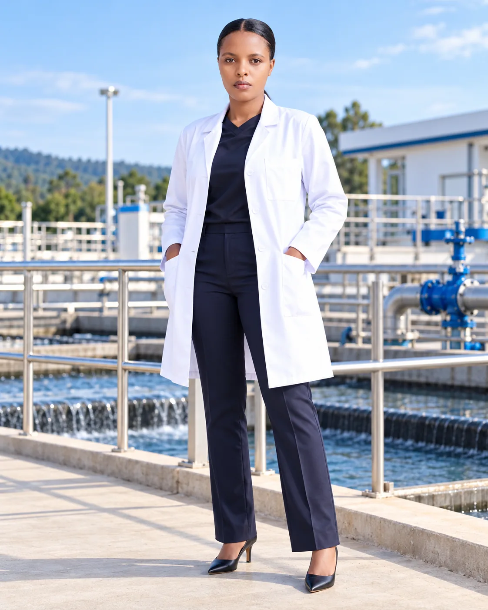

Water treatment
operations
Treatment processes, chemical dosing and production activities.
Water Treatment Plant Engineer / Water Quality & Production
Connecting scientific expertise, water treatment operations, and people-focused leadership.
Water is life.
PERSONAL MOTTO
THE WORK BEHIND THE WATER
Water treatment is where science becomes a service to communities.
Based in Kigali, Nyirarukundo Seraphine works across water treatment operations, quality control, microbiology, chemistry, production and team coordination. Her background combines technical experience with studies in business administration.
She is interested in progressing into management opportunities where technical understanding and operational leadership meet.
Explore professional experienceFOCUSED, SCIENTIFIC, PRACTICAL
Experience spanning the important disciplines of water production and water quality management.
Treatment processes, chemical dosing and production activities.
Water sampling, laboratory testing, monitoring and quality assurance.
Team coordination, production management and operational documentation.
EXPERIENCE IN PRACTICE
The dates below are provisional editorial placeholders and must be verified before publication.
WASAC Group
Water quality management and production.WASAC Group
Water quality, microbiology, chemistry and solution preparation.Kigali Independent University
University of Rwanda · Exact credential title to confirm
École Secondaire de Ruhango · Qualification to confirm
COMING WITH VERIFIED CONTENT
Specific projects and measurable achievements will be presented here once details are supplied and approved.
PROJECT CASE STUDIES / CONTENT PENDINGTHE NEXT CHAPTER
Open to professional opportunities in water operations and management. Public contact information will be added after owner approval.
Back to top